I can't believe it took me a whole year before I finally figured out what to do with this! Doing the first 10 projects in ±10.5 months, and then needing a full year for the final 2 o_O Well, better late than never I guess.
For a while, RJ & Mara Averick (our guests this month), Shirley and me wanted to do 1 big project together. Based on the amazing dataset that RJ had about the different versions of Cinderella. RJ had done the research, Mara the data cleaning and initial analyses, I had made some rough designs, but eventually we never started actually programing :S I can't quite remember why, but I think trying to work on exactly the same project, in our free time, across several time zones, just was too much complexity.
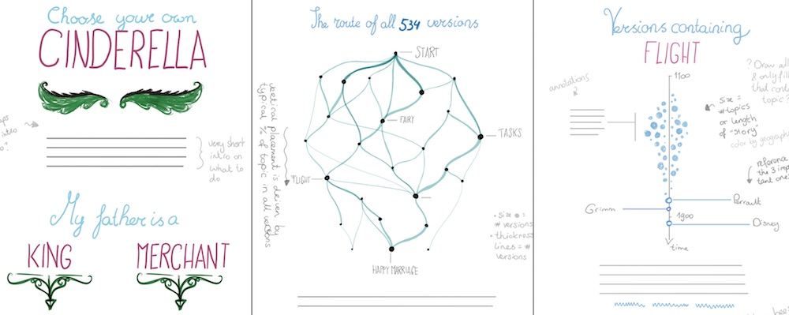And so for the next few months I really did try to think of what to do with this month. And I so much wanted to do something with Disney, another topic that I am personally passionate about. But I just couldn't find a good idea, or the data wasn't out there (and I was not ready to watch every movie to make my own dataset (this time)).
And so, during May, at OpenVis Conf 2018 in Paris I finally decided that I should give up on Disney and try something else. The talks definitely helped to inspire me, especially Ian Johnson's talk about Google's Quickdraw dataset.
Maybe something about the "mythical" words in Quickdraw and how they're drawn, like dragons and mermaids? Something about dragons in general? Or about myths from many different cultures and their timelines and similarities? But no, that would probably mean a lot of manual data gathering... However, myths across cultures... that suddenly reminded me of constellations! Myths and legends in the sky! I know my favorite constellations: Orion & the Swan (or to be more precise, the "Summer triangle"). But what did other cultures make of those same stars? What shapes and figures did they see in the same sky?
And finally, that idea sparked a feeling of enthusiasm and wonder in me in such a way that I knew it felt right. Of course, as an Astronomer, it also felt kind of appropriate to have my final data sketches project to be connected to actual stars ^_^
Of course, that idea still hinged on data availability. I thought that the subject I had chosen would be specific enough for Google. But allas, trying to search for constellation data was heavily intermixed with astrology...
But I was on the train from Paris back to Amsterdam and I would give myself the full 3 hours to keep looking for data. I did find some promising things about the "modern" 88 constellations, but nothing about constellations from multiple cultures. That is, until I came across Stellarium, which is an amazing looking 3D stellarium for your laptop. Even better, it's open source and you can access all its data on GitHub. And as the giant cherry on that cake, they have a folder called skycultures in which there is information on constellations from ±25 different cultures from across (almost) the entire world! Aztec, Hawaiian, Japanese, Navajo, and many more. Exactly what I needed
Of course, that data was not in the format that I wanted for my visualization. And although the data was in a structured format, it wasn't a trivial-to-process CSV file. Luckily, Stellarium has a very extensive User Guide that explains exactly how to interpret the data. For example, for the "stick figures", or the lines between stars, the data looks as follows:

Where each row is 1 constellation. With the constellation's id at the start, then the number of connections in the constellation, and after that so-called Hipparcos star id's, where each pair of 2 HIP id's would mean a line between those two stars. (for more info, see section 9.7 of the user guide). I converted these files into something very similar to the typical links file of a network, with a source id and target id per row (thus a row per line to draw).
I pulled the full names of the constellations from each constellation_names.eng.fab file. And I created a file that contains all the constellations (id's) that a specific star is connected to. However, there was still 1 important "subject" that I was missing in terms of data; the stars.
Thankfully, that's a dataset I'm already familiar with and have used on a few earlier astronomy themed visualizations. The HYG database contains lots of information about many, many stars. I took the right ascension and declination (you can see these as the latitude and longitude of the sky) so I could place the stars on a map. The Hipparcos id, to connect them to the "stick-figure" data. The apparent magnitude (how bright the star looks) to use as size. And finally, I used the star's color index information (which is not color exactly) to get an (effective) temperature, which I could then use to color the stars (it would be a shame not to color the stars to the way they actually appear to us). For that last step I used the formulas that I found in the source code of this website.
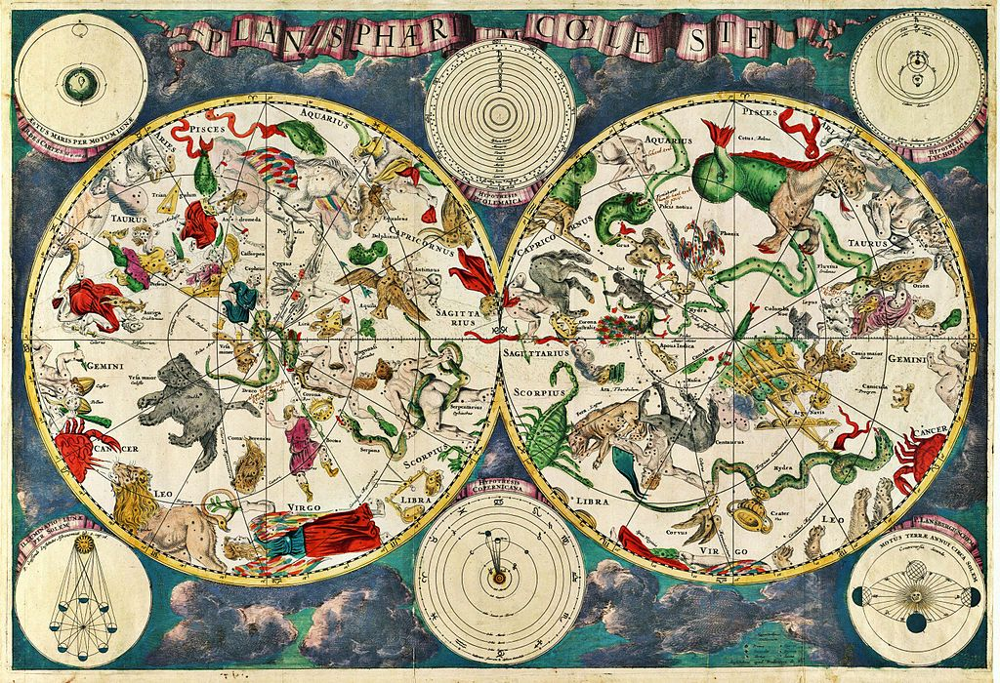O, and I filtered the stars to only include those that are bright enough to be seen by the naked eye (in the middle of nowhere), which is an apparent magnitude smaller than 6.5. Strangely enough there were 65 stars that were used in constellations that are (much) fainter than that. So technically we shouldn't be able to see them (without instruments). However, after spending more time with the data throughout the project, I now have the idea that these are probably misclassified stars. They have very close neighbors that are bright enough to be seen, but by accident the person creating the constellation file selected the wrong star's HIP id to use. And along the project I did fix a few of these that were visible in the end results.
Besides all the Sky Maps, I also wanted to show something a bit more "statistical", using a bigger set of data. And the thing that sparked my interest the most (and fit the story the best) was seeing how the data would look when you'd plot brightness versus the number of constellations that each star is used in. Is there a trend? If so, which stars are deviating from that and why? So, I made a quick and dirty plot in R using ggplot
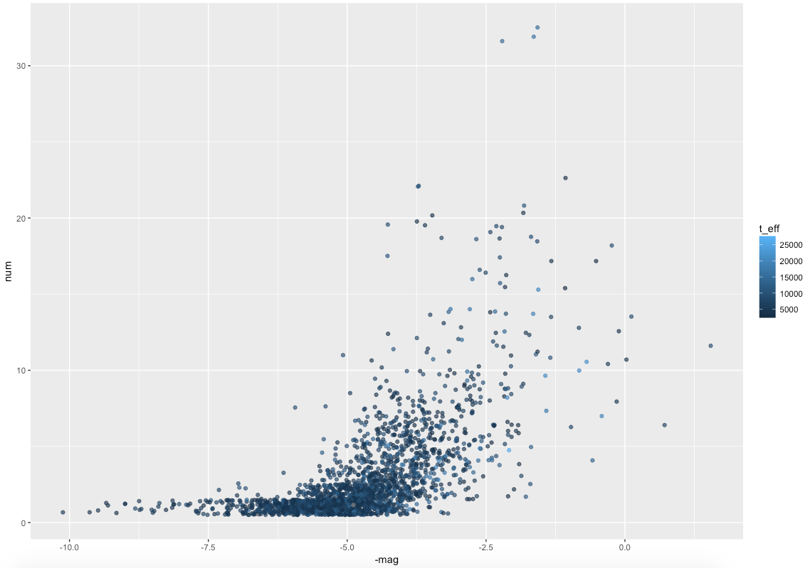However, while investigating this scatterplot more closely, I noticed that my star data was missing more "proper" star names that I wanted. Almost all the 9 stars of the Pleiades were not named! So I searched for a bigger list of named stars and found a sort-of official list of ±350 stars on Wikipedia.
However, these only contained the names. I needed to know their HIP ids to connect them to the data. Thankfully, there is the Universe Guide where the URL's are based on the star's name, and it contains the HIP id in the h1 header. I therefore used the rvest package in R to download the Universe Guide page of all of the stars on the wiki list (which I copied into Excel using the basic "data from web" option), grab the h1 from each page, and only keep the HIP id from the text (and of course had to do some manual look-ups for (only) a dozen names that didn't return results from the Universe Guide). In the last step I joined the "proper star names" dataset to the original HYG dataset to have a much more complete set of star names :)
A final note about the data: There are no "officially" declared constellation figures. There are indeed 88 official constellations, but the only thing that is recorded is what area of the sky that constellation takes up (kind of like how the US states divide up the land), but there is no official consensus on how the "stick-figure" part of the constellation should be drawn. I've therefore decided to use the data from Stellarium as my "single source of truth".
This month was very light on actual sketching. Mostly because the basic idea in itself is quit simple: focus on 1 star and visualize all the constellations that use that star. Using different colored lines for each constellation and surrounding each star with a donut-like mini chart that would show by which constellations that star is used (apart from the "main focus" star). You can see the tiny sketch in my brainstorm below (bottom of the left page)

I wanted the map of the stars to look like a combination between current and ancient Sky Maps. To use the deep blue colors of space. Set data-based sizes and colors of the stars (and make them glow!). But to also draw the ecliptic line, use the markings of the background lines ("grid-lines" in the sky in a way), where some would be signified by the Zodiac sign; in general give it a feel of the old maps. Such as this exquisite one made by Alexander Jamieson in 1822

Another part of the project that took up more pages in my little notebook was math (as usual). As you can see in the final project, if there are multiple constellations that use the same two stars to draw a line between, I draw those lines side by side. And although that is really simple to draw when the stars are perfectly aligned either horizontally or vertically, for every other option (so 99.99% of the time) it wasn't that trivial. Or so I thought...
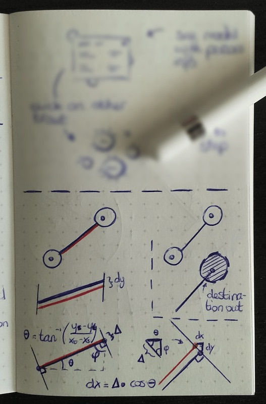I started out thinking it would probably require a combination of sines and cosines, with perhaps four different cases (how the target star was positioned relative to the source star). In the sketches above and below how I'm trying to see if there are indeed different solutions for those four cases. But eventually it all came to do relatively simple vector math; finding the normal vector, and for each new constellation move up a little farther along the normal vector (I only realized this solution very late, which is contained within that sort-of red circles small drawing that my Apple pencil is pointing to)

On the right-bottom side of the sketch above you can see the final piece of math that I needed to position the constellations around one big main map. Like I've mentioned a few times before, math is truly your best friend in creating more unique data visuals, especially geometry!
Finally, as mentioned in the data section, I wanted to add some more "statistical" charts. The first was a scatterplot showing star brightness versus the number of constellations it appeared in. The image below left is the, extremely rough, sketch I drew. Really, it's so simple, it almost wasn't needed. But it's always good to roughly sketch out an idea, in case you're mind is glossing over some thinking error.
I also wanted to show people that some cultures have very small constellations on average (few stars per shape) and others have very intricate ones. For that I draw the, also extremely rough, bar chart in the sketch above right. As you'll see in the code section below, I did create a basic version of it, but ended up incorporating this data in quite a different (visual) way.
My first goal, before focusing on the actual data visualization side of things, was to create a "base map" of the sky. I've never created my own, so I did a little research on what kind of projection is typically used, and decided to go with a Stereographic projection.
With about 9000 stars for the full sky, mini donut charts and many constellation lines, I knew that I wanted to create this project with HTML5 canvas, not SVG, due to performance reasons. So, I loaded my star data, set-up my d3 code following several other examples of sky maps found on blockbuilder. I thought I had done everything right, pressed save and saw a thin weird stripe of stars (image below left), which gave me the feeling of "Ugh, with such a crappy first result that I thought would be correct, did I take on the wrong subject...?" (I've never truly worked with projections before, outside of the extremely default Mercator).
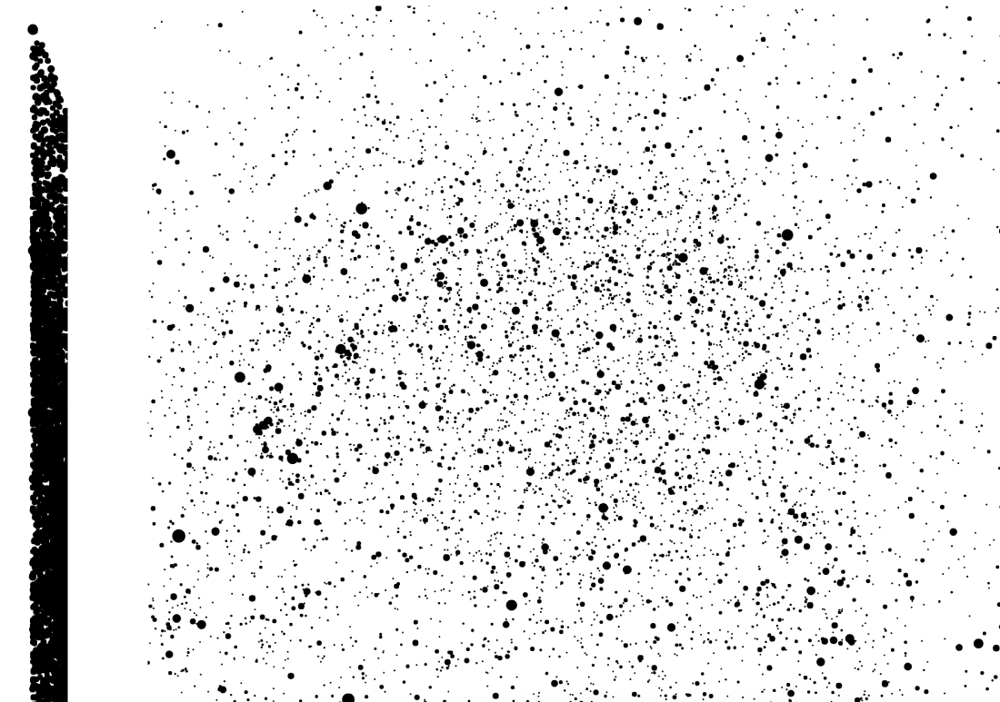After more careful comparison of the other sky map examples and mine, I saw I had forgotten some transformation calculation of the RA (right ascension) and declination. A few code adjustments later and I had the map above right. However, it was still too abstract for me to see if it was correct or just a random collection of points 😅 (although in hindsight I am now able to point out the stars that make up Orion on the left, can you?)
I felt that the one thing that would probably help me realize if the stars were correctly plotted was to add the graticule lines, using d3.geoGraticule(). Thankfully the existing d3 based sky map examples helped out again. And when I learned how to rotate the projection to face North and added the lines for the modern constellations I finally knew for sure that the stars were in the correct location (Orion is now on the middle right, seeming as if rotated 90 degrees counter-clockwise in the image below right).
After a few more tests, I finally understood how to use the RA & declination coordinates of 1 particular star to rotate the projection to center on the star. And so, for the rest of the sky map building I focussed mostly on the central star of Orion. I guess it's my favorite constellation because many of its stars are very bright, such as Betelgeuse, Bellatrix and Rigel. So bright even that on a good night you can see that Betelgeuse is truly shining in a reddish color! It's therefore an easy constellation shape to pick out. I was also able to see it from the living room window of my childhood home for many winters. And as the cherry on the Orion-cake, my all-time favorite Hubble photo is of the Orion Nebula, which sits right in the middle of Orion's lower almost triangle section.
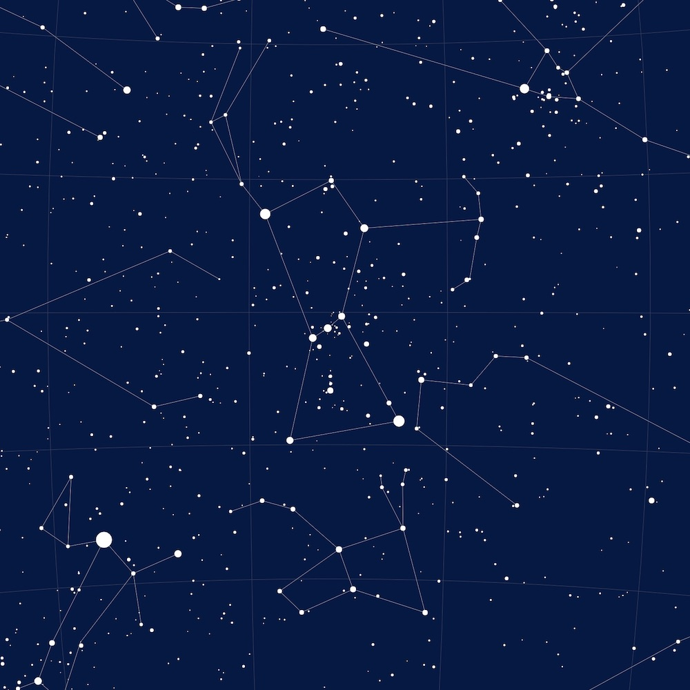As you can see in the images above, I was already using the magnitude to scale the radius of each star; the brighter they appear to us, the bigger the circle. Now it was time to look at the colors of these circles. I started with a temperature-to-color scale I'd already investigated and developed to be very similar to the star's actual perceivable colors for a Scientific American piece on our "nearby stars" that I created the visualization for. Adding several more blue tones for the much brighter stars that are present in this bigger dataset of stars. For a while I played around with making the colors more vibrant. However, that definitely created a sky that was way too colorful (image below left).
But even with the more real and nuanced colors, and adding a glow to each star (with canvas's shadowBlur property), the bigger stars looked a bit flat to me. In reality, a star looks a bit brighter in the center and dimmer around its edge. I've already experimented with this before in my recreation of an HR-diagram (which is a very famous & useful scatterplot used in Astronomy). Luckily, canvas also has a createRadialGradient property. And during my "A Year in Flights" data art project I'd played with creating a unique gradient for each data element in canvas, so I copied most of the code from there, and adjusted it to a radial instead of linear gradient.
I used chroma.js to make slightly brighter and darker colors based on the 1 color I had for each star. It took some experimentation to figure out the best settings though. The image below right was definitely not correct (I'd made the stars bigger to better assess how well the gradients looked).
It's an effect that people won't consciously notice, but it does make that slight attention to detail that I think subconsciously adds to the whole experience (you can see it better in the first circular image farther below).
Most sky maps that I'm familiar with are not rectangular. They ones I used as a child, and those I find most beautiful, are circular. I therefore clipped the square to a circle. And on the outside I added a dashed line around it. It's typically used to denote degrees, but here it's just there for ornamentation.
I also added a dashed line inside the map to show the so-called ecliptic. You can faintly see it curving from North to South on the right-hand side in the image below. This is the path that the Sun makes across the sky (relative to us). Because our Earth's rotational axis is 23.44° tilted with respect to the plane in which the planets go around the Sun, the ecliptic is not a straight line following 0° declination. Again, just an embellishment to make the whole look more interesting (although the ecliptic at least reveals information).
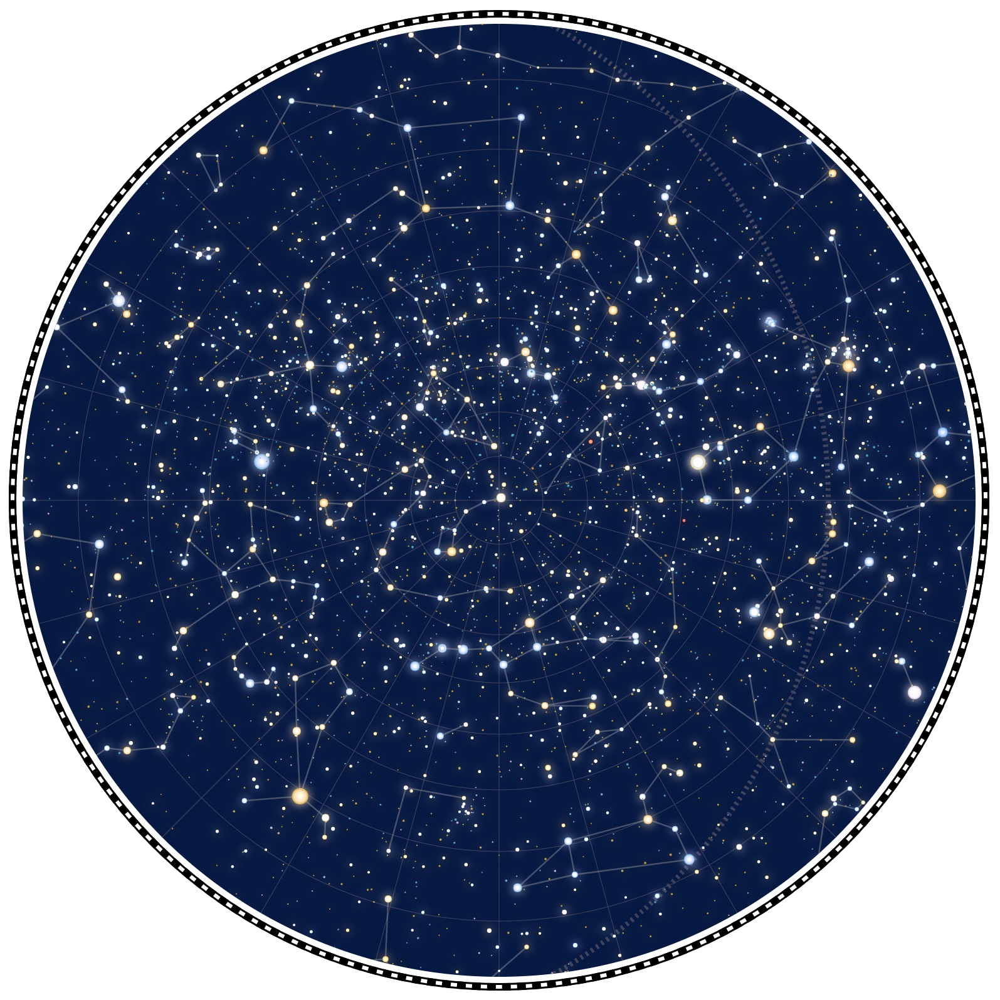Similar to maps of Earth, maps of the stars also often show a grid of lines with the hours of RA (24 hours being a full day) and degrees of declination along the outside edge. In the crazy number of the useful features d3's geo functionality has, I hoped that perhaps it would also have some function that would calculate the graticule-edge-crossing-location, but sadly it didn't.
I therefore did the next best thing. I went to the geo channel of d3's Slack group and asked how to find the pixel locations where the graticule lines cross the clipping circle.
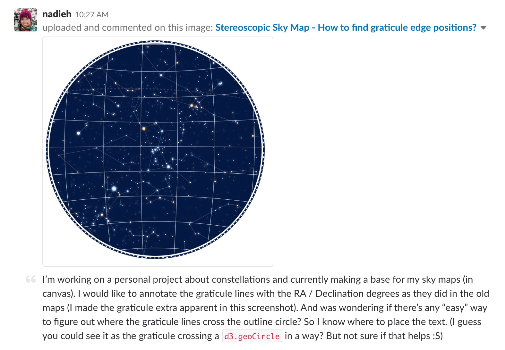And it took Philippe Rivière (aka @fil, one of THE best projection/map creators of today) only little over an hour to supply the link to a fully fledged example in Observable! Which is mathematically calculated. However, for different rotations the math gets a lot harder. So difficult that Philippe made a "brute force" example. I won't explain the details, but I'm very purposely putting the brute force in quotation marks there, because I'd say his method is still way too smart and elegant to be called that. Many, many thanks to Philippe for his freely given effort to solve the problem, because I don't think I would've come up with something nearly as good and concise 🙌
In the image below left you can see how I added some obvious extra markings to check that the function that I adjusted from Philippe's was giving back the right locations. Hotpink is my go-to color 😜
I replaced the yellow and red circles by the actual degree numbers. At first I wanted to keep the notation of the RA in hours, but I really liked the usage of the zodiac signs in Alexander Jamieson's map (see the sketch section above). I therefore followed his example; using the Zodiac signs for 12 "major-RA" lines and only use 10° and 20° for the 2 minor-RA lines in between the major-Zodiac lines (see image below right).
And then it was time for the final big aspect that I had in mind for the sky map base; space itself. Right now the background color of "space" was the same dark blue. But I've been fortunate enough to visit some truly amazing places for star gazing during vacations, such as the Namib or Australian deserts. And I'll never forget how awestruck I was by seeing the tendrils, "clouds" and glow of the Milky Way streaking across the sky.
And this is really where my design was taking a step away from reality, but I really wanted to add some depth to each image by mimicking some lighter color streaks across the background. Not quite insinuating it was the Milky Way, but just not perfectly the same color. A bit like I'd seen in Nicholas Rougeux's Literary Constellations project.
At OpenVisConf I'd just seen some "behind-the-scenes" tests by Ian for his Quickdraw talk. And a few bloopers too, although they looked more like abstract art that I wouldn't mind having in my house :) In some of those tests and bloopers he was using d3's contour function to show densities and it gave exactly the kind of feeling I was looking for.
I therefore started experimenting with contours as well. First creating a dummy dataset that was jittered along a simple sine function and then applying d3.contourDensity() to turn the points into a shape. It took a lot of tries and different settings before I kind of figured out how to tweak my dummy dataset to give different levels of contours that were the right size of "blobbyness"
I added more random fluctuations into the sine "swirl" so it would look different for each refresh of the sky map. And yeah, hotpink isn't the right color for space either... A final touch I added was to blur the contours, for extra background fuzzy-ness (image below right). Just like SVG, canvas also has a wide range of filters to apply (not implemented in Safari weirdly enough though).
Adding a North and South pointer, again more for added ornamentation (but correct at least), and my "base map" was done! (and that took up more time than the whole month of July 😭 why don't I do simple things anymore...)
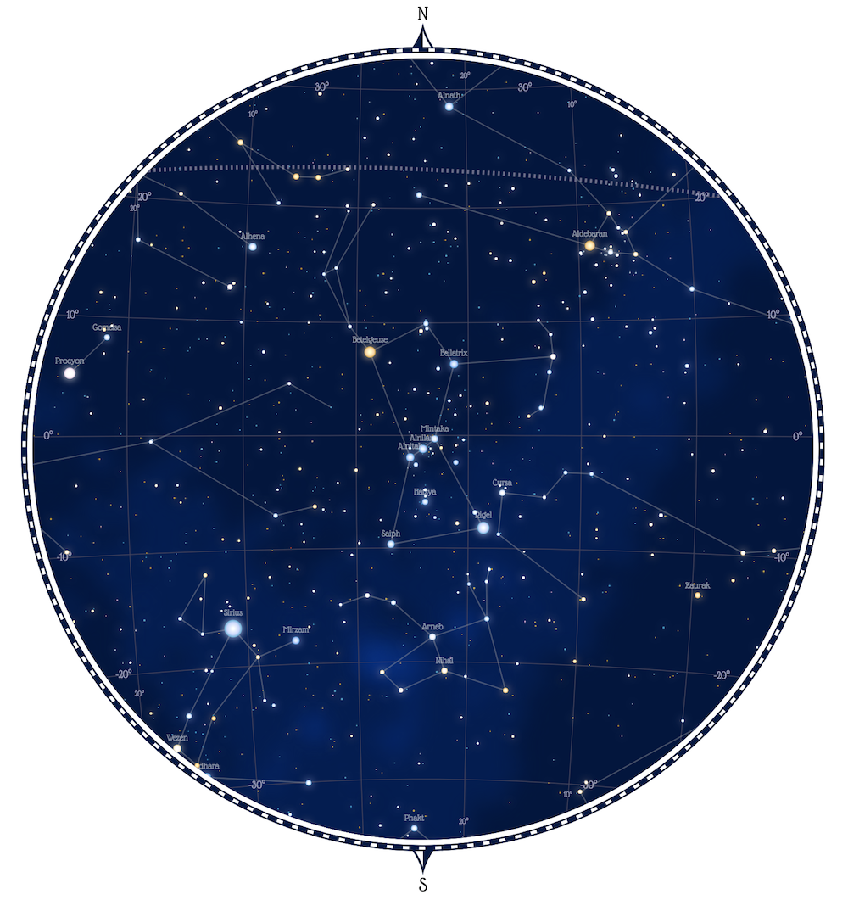ALRIGHT! And now we are finally ready for the actual data visualization part of things (๑•̀ㅂ•́)ง✧
I started with creating a small donut chart around each star that was part of a constellation. Even though I chose 1 particular star to focus on, many of its neighboring stars would also be part of the different constellations. Therefore I wanted to visualize how many constellations used each star.
And because I was working in canvas, it really didn't matter how many tiny donut charts I would create, the page doesn't really get any slower. Thankfully, this was a rather straightforward part by looking at examples found on blockbuilder. First a simple version with only white slices and not much later the colored version that I wanted with rounded edges and a bit of padding.
I chose to switch and focus on the brightest star in th night sky: Sirius. During my exploration beforehand I had already noticed that there was a lot of variety in how cultures used the stars in that section of the sky (Orion on the other hand is very similar in many cultures, which you can see farther below).
The lines in between the stars was a bit of a different story. I wanted these lines to be placed alongside each other, but I only had the exact center location of each star, so calculating the offset in the x & y direction that each extra line would need wasn't trivial. You could already see my (mostly useless) math in the sketch section above, until I finally remembered not to think in geometry (which created the wrong image below left), but in vectors and the normal vector.
Doing some tests to check if all went well, fixed a bug that had to do with if a star was either a "source" or a "target" star (middle image blow). And finally having the correct result of lines nicely placed alongside each other (image below right).
To see if this concept truly worked for the more "famous" stars in the sky I looked at Ursa Major (the Big Bear, or partly better know as the Big Dipper. Well, the Big Dipper seems to be a very obvious collection of stars, since many cultures use practically the same shape. So many even that the width of the constellation lines between stars is much bigger than the diameter of the stars (image below left). I wasn't quite sure what I thought of that...
I therefore made a small update to turn the lines in curved lines that would always start and end in the star's central location (image below right).
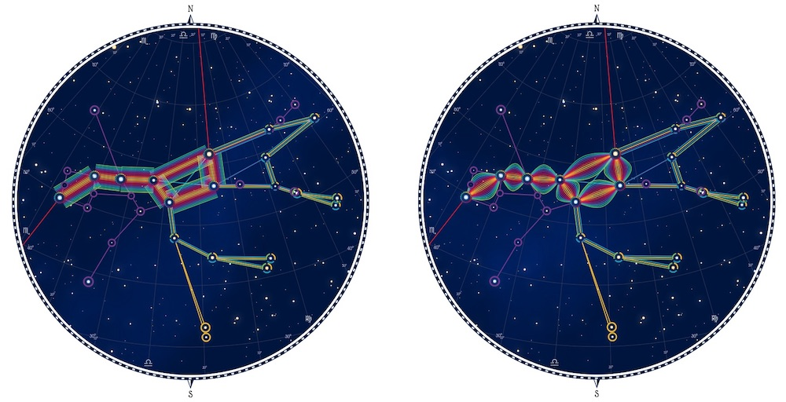And also made a version for Orion that would only curve groups of lines if there were more than ±10 lines in between two stars.
I then showed the different options to Shirley, and she told me that it's so
However, these groups of constellations showed me that using 1 particular zoom level and center would definitely not work to properly show all constellations. For example, the dark red constellation is partly outside of the circle that I was using for Orion. I therefore spend way too long (before I finally figured it out...) to automatically calculate the optimum zoom level, rotation and center that would nicely fit any constellation that I would give the program. No matter if it was only a small portion of the sky, or across half the sky (the white circle shows the star that I'm focusing on).
I also discovered this beauty of a constellation below that comes from several tribes in South America and is called Veado (which Google tells me is similar to 'deer'). I would say that it seems a bit too specific for a constellation that can "easily" be found in the sky, but that's perhaps just my own bias.
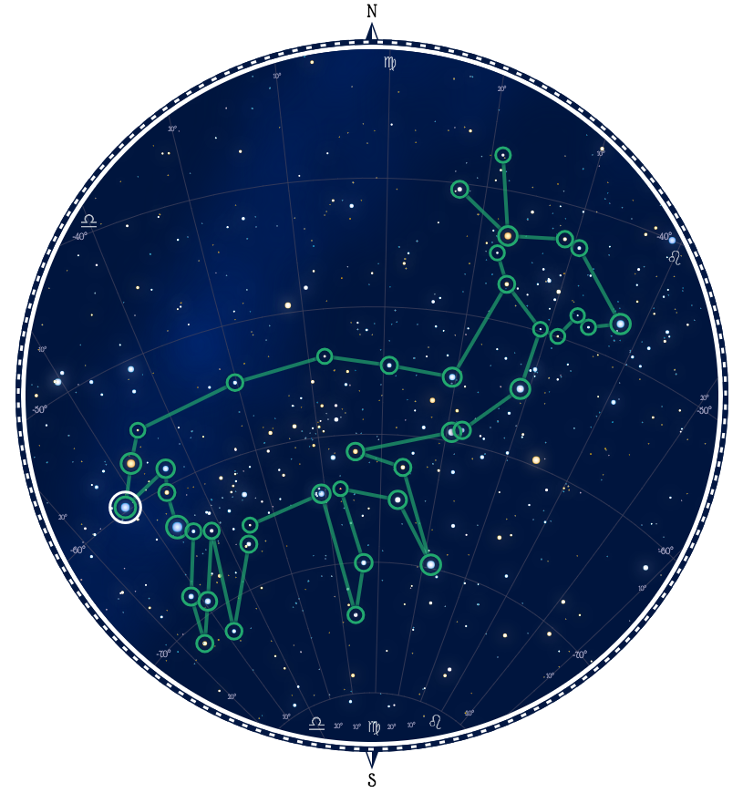In the default sky map version it was difficult to focus on the constellation of one particular culture. I therefore added each separate constellation in a ring around the main one. The math wasn't hard thankfully (see the sketch section above for my notes on this). And thankfully I had anticipated this so the charting function that created the central version could just as easily be used to show a single constellation, or even the constellations of completely different stars by making slight adjustments to the data that you supplied to it. Using canvas's handy drawImage function together with the offscreen canvas possibility, I added the mini circles in a ring to the main canvas.
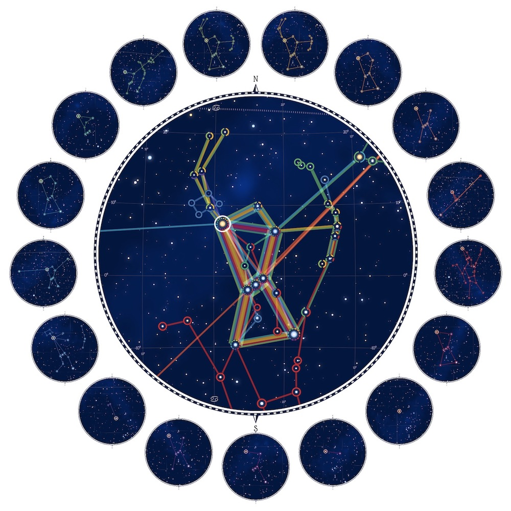That immediately showed me two things. For one, this was excruciatingly slow! But also, the complete sky map on the mini circles wasn't needed at all. They were too small anyway to really have any visual effect, and they were too distracting from the central map. Luckily, removing elements from the mini maps would also make them faster to load. The main thing to see were the constellation shapes anyway, which was the most performant part of the Sky Map's 3 "layers"; the glowing stars, the lines & donut charts and finally the entire background.
I was sadly seeing some anti-aliasing effects in the mini maps because I was still creating each map at a fixed size of about 1000 px and then drawing them to the small regions around the main map. After some googling I found an interesting answer on stackOverflow that down-scaled a canvas in steps. After some fiddling around, and apparently doing it completely wrong at the start which gave me this weird, extremely upscaled version only showing 1 "giant colored pixel", I got it working and ended up with the final version below right.
Finally I added some interaction so you could click any of the outside mini circles to see it drawn properly in the center. And I could've stopped there. It was a complete visualization in its own right. But just showing Betelgeuse felt so incomplete! I had so much more data that I could use to tell a fuller and more interesting story. So even though I had already racked up way too many hours to get to this point, I decided that this month would become a complete article, with beginning, middle & end. Or in other words, even more visuals (◍•﹏•)
One other visual I definitely wanted to add was an (almost) full sky map that would show all of the constellations of one chosen culture (and where you could select each culture and have the map update). With how elaborate my circular sky map function already was, setting up the base for this was a piece of cake! In essence the only change I had to make, except for not clipping to a circle anymore, was to change the projection from stereographic to an equirectangular one. This produced the visual in the image below
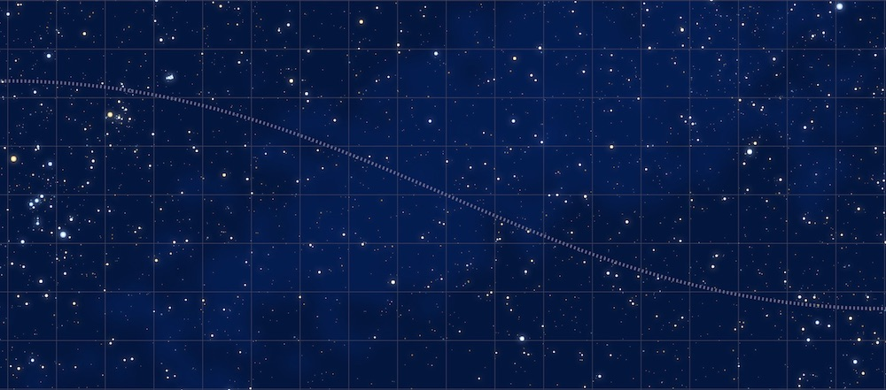For this version I did make sure to have the background lighter patches follow the actual rough location of the Milky Way :)
I liked the result so much that I decided to use this for the header of the full article as well. And to make this just a touch more fun, i made it moveable! I was inspired after seeing the new R2D3 come out, where the animations don't stop immediately when you stop scrolling. I asked one of the creator, Tony Schu how on Earth that was done. And that's how I got introduced into the world of "reactive animations", rxjs and LERP. Well, getting the subtle "moving" effect working on my full-width sky map took hours, ugh. Since this isn't a visual thing, I don't have any screenshots of intermediate stages, but can only show you the final result
And I made the actual interactive version farther down the page with the constellation layer plotted on top, which also has the option to move the map horizontally on a mousemove or touchscreen swipe.
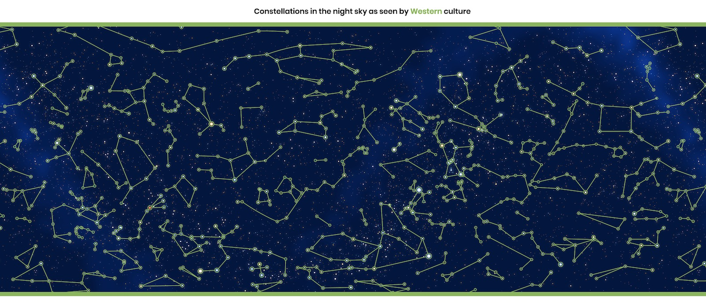Are you still with me! Sorry for the long post, hehe, but this month was just amazingly complex and had many moving pieces. But we're almost there now.
TO BE CONTINUED
{kind=link}
{kind=link}
{kind=link}
{kind=link}
{kind=link}
{kind=link}
{kind=link}
{kind=link}
{kind=link}
{kind=link}
{kind=link}
{kind=link}
{kind=link}
{kind=link}
{kind=link}
{kind=link}
{kind=link}
{kind=link}
{kind=link}
{kind=link}
{kind=link}
{kind=link}
{kind=link}
{kind=link}
{kind=link}
{kind=link}
{kind=link}
{kind=link}
{kind=link}
{kind=link}
{kind=link}
{kind=link}
{kind=link}
{kind=link}
{kind=link}
{kind=link}
{kind=link}
{kind=link}